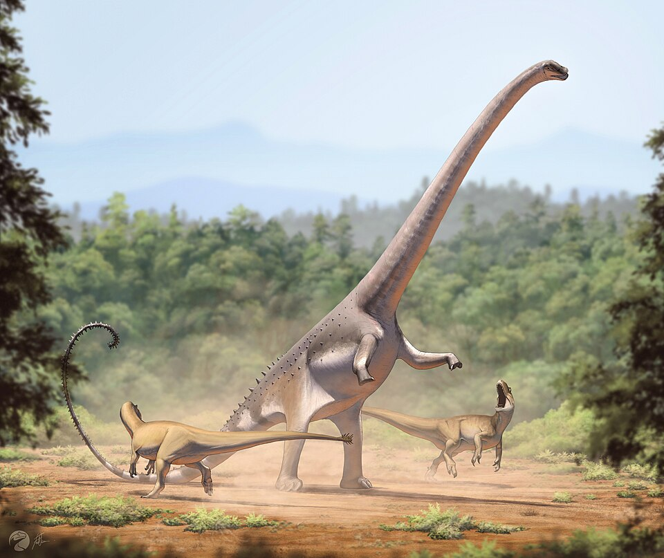

Alossauro
Allosaurus fragilis
Período
Viveu durante o período Jurássico Superior, há aproximadamente 155 a 145 milhões de anos.
Alimentação
Era carnívoro e se alimentava de grandes herbívoros, como saurópodes e estegossauros.
Características
Era um predador bípede com cabeça grande, mandíbulas com dentes serrilhados, pequenas cristas acima dos olhos e três dedos com garras em cada mão.
Curiosidades
- Seu nome significa “lagarto diferente”.
- Seus fósseis foram encontrados principalmente na América do Norte.
- Era um dos maiores predadores da sua época, com cerca de 8 a 9 metros de comprimento.